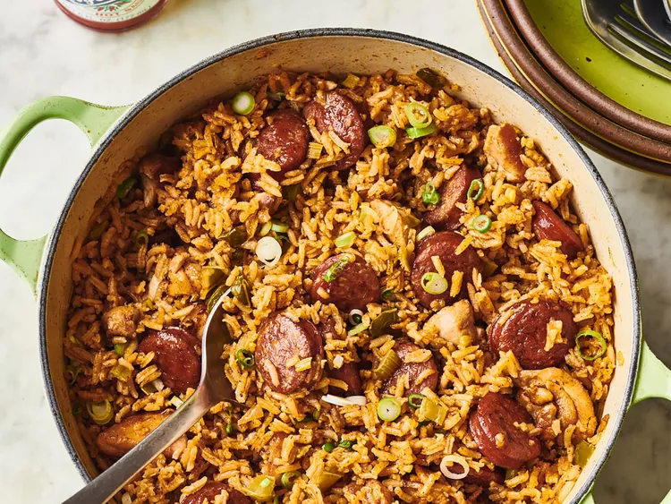

Jambalaya

Description
Jumbalaya is a delicious and comforting cajun/creole dish that has beautiful blend of flavors with the perfect amount of heat to spice up your next home cooked meal.
This dish can be made with many different variations with several alternative proteins, vegetables, and spices that make it extremely versatile and enjoyable to tweak to your specific tastes.
In this recipe we will use Andouille Sausage, Chicken Breast, and Shrimp along with our "Holy Trinity" of vegetables with cajun spices to bring this dish to life.
Ingredients
- 32oz Chicken Stock
- 1 Green Bell Pepper
- 1 Yellow Onion
- 2 Stalks of Celery
- 3 Cloves of Garlic
- 1 Tablespoon of Kitchen Bouqet Browning Sauce
- 2 Tablespoons of Cajun Seasoning (ex. Tony's)
- 1 lb Chicken Breast or Tenderloin
- 1 Package of Andouille Sausage
- 1 lb of Medium Shrimp
- Vegetable Oil
- 2 1/2 cups of Long-grain Rice
Steps
- Preheat Oven to 300 degrees.
- Prepare your vegetables by dicing the onion, bell pepper, and celery into small bite size pieces. Peel and mince the garlic.
- To avoid cross contamination use separate cutting board and knife to slice the meats. Slice sausage into small rounds or half moons. Pat chicken dry with paper towels and then slice the chicken into bite size pieces, removing any excess fat or tendons. Thaw your shrimp out and make sure to pat it dry with paper towels, once dry season the shrimp evenly with 1 tablespoon of Cajun seasoning and cover and leave in the fridge until we use it later in the recipe.
- Heat up 1 tabelspoon of oil in a large pot with a lid that is oven safe (preferably a cast iron dutch oven) on medium-high heat until it becomes glossy and begins to smoke. Add in your sausage and stir until coated in oil. Once sausage has started to brown remove sausage and place in a bowl to the side. Now place the bite size pieces of chicken into the pot and cook until slightly seared/browned on each side, remove the chicken from pot and place in a bowl to the side.
- Add your "Holy Trinity" aka. Onion, Bell Pepper, and Celery to the pot (if the pot looks a bit dry add just a splash more oil). The vegetables will release a lot of water which will help get some of the tasty fond off the bottom of the pan, cook the vegetables for about 10 minutes stirring occasionally to make sure nothing is sticking to the bottom of the pan. After about 10 minutes and vegetables have started to soften up, add your garlic in and cook for another 10 minutes.
- Now add just a splash of chicken stock to your mixture of vegetables just to deglaze the bottom of the pot and get all of that good flavor up and into your vegetables. After deglazing add your chicken and sausage back to the pot, then add the rest of youur chicken stock, a half tablespoon of Cajun seasoning, 1 tablespoon of kitchen bouqet, and the 2 1/2 cups of rice. Stir and blend everything together and bring to a boil.
- Once the pot is just boiling quickly taste to see if you need to add more seasonings or salt, then quickly add your preseasoned shrimp to the pot, carefully blend with the rest of the ingredients and cover with a lid. Place in preheated oven for 1 hour.
- After an hour, turn the oven off and remove the pot. DO NOT OPEN THE LID. Let sit for 5 more minutes, then remove the lid, stir, and enjoy!